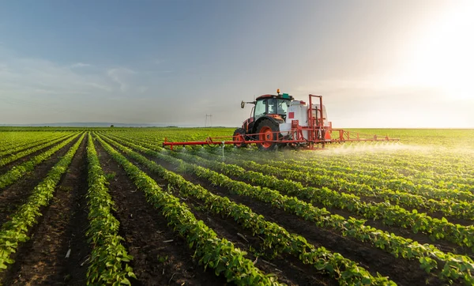

Selamat Datang di Website Pertanian
Website ini bertujuan untuk memberikan informasi dan edukasi tentang pertanian yang berkelanjutan.
Lahan sawah merupakan salah satu ciri kehidupan masyarakat tradisional yang umum dijumpai di beberapa negara yang sebagian besar penduduknya mengonsumsi beras sebagai makan pokoknya, seperti di Asia (Asia Tengara, Asia Selatan, dan Asia Timur). Lahan sawah yang merupakan ciri kehidupan masyarakat tradisional sudah ada sejak zaman purba. Bukti-bukti bahwa lahan sawah sudah ada sejak zaman purba menurut Rostam dan Anuar (1984) telah dikaji oleh ahli arkeologi yang menginformasikan bahwa pertanian lahan sawah dengan tanaman utamanya padi dimulai di India dan Cina lebih dari 1.000 tahun yang lalu sebelum Masehi. Kegiatan pertanian lahan sawah dengan tanaman pokok padi mulai dikembangkan ke kawasan Asia lainnya, termasuk ke Indonesia. Karena beberapa negara Asia merasa beras cocok sebagai makanan pokok, perkembangan lahan sawah di negara-negara Asia cukup pesat. Lahan pertanian yang berupa lahan sawah biasanya dicirikan oleh adanya pematang yang mengelilinginya dengan maksud untuk membatasi antara bidang lahan sawah satu dan bidang sawah lainnya. Di samping itu, pematang lahan dibuat juga untuk tujuan mencegah keluar masuknya air secara berlebihan sehingga kondisi air dapat diatur sesuai dengan kebutuhan. Ciri lain lahan sawah ialah jenis tanaman yang ditanam pada lahan sawah biasanya tanaman pokok padi pada musim hujan dan tanaman palawija (kacang-kacangan, jagung, umbi-umbian), sayuran (kacang panjang, sawi, lombok dan bawang merah), maupun buah-buahan (melon, pepaya dan semangka) dan tanaman lainnya. Keberadaan lahan sawah memiliki banyak fungsi, baik untuk kehidupan manusia maupun lingkungan. Fungsi lahan sawah bagi kehidupan manusia selain sebagai penghasil bahan pangan, juga merupakan salah satu sumber pendapatan, tempat bekerja, tempat rekreasi, tempat mencari ilmu, dan lain sebagainya. Fungsi lahan sawah bagi lingkungan dapat dilihat dari fungsi lahan sawah sebagai tempat hidup berbagai tumbuhan, tempat berkembang biak berbagai organisme hidup seperti cacing, berbagai serangga, burung, belut, ular, dan organisme lainnya, berperan dalam mencegah terjadinya banjir, erosi, maupun tanah tanah longsor. Meskipun demikian, jika tidak dikelola dengan baik, lahan sawah juga dapat menimbulkan dampak negatif terhadap manusia dan lingkungan, seperti pencemaran air, tanah, dan udara akibat penggunaan bahan kimia dan mekanisasi pertanian